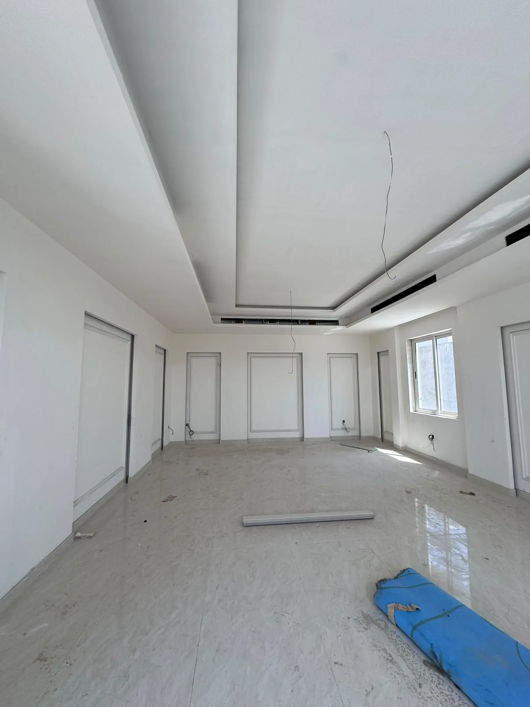

لا يبدأ التصميم الداخلي للمكاتب والمحلات في الرياض من اختيار لون أو كسوة، بل من فهم كيف تعمل المنشأة وكيف يتحرك المستخدم داخلها. تصميم مكتب جيد يختصر الخطوات ويدعم التركيز والاجتماعات، وتصميم محل جيد يقود العميل إلى المنتجات والخدمة والدفع دون ارتباك.
تحتاج المساحات التجارية أيضًا إلى موعد افتتاح وميزانية وهوية ومتطلبات تشغيل وأنظمة أكثر ضغطًا من المنزل. لذلك يجب أن يتحول التصميم إلى مخططات تنفيذ وكميات واعتمادات مواد منسقة مع الكهرباء والتكييف والسباكة والاتصالات، ثم إلى خطة تجهيز واختبار وتسليم.
حوّل أهداف النشاط إلى برنامج تصميم
يجمع البرنامج عدد الموظفين والزوار، ساعات العمل، المنتجات أو الخدمات، نقاط الاستقبال والدفع والتخزين، الأجهزة، الخصوصية، الأمن، والنمو المتوقع. هذه المعلومات أهم من مساحة المشروع وحدها لأنها تحدد عدد المحطات ومسارات الحركة والأنظمة.
يُفضّل توثيق سيناريوهات التشغيل: وصول موظف، استقبال عميل، توريد بضاعة، اجتماع، تنظيف، صيانة، وطوارئ. عندما تُختبر هذه السيناريوهات على المخطط تظهر التعارضات قبل التنفيذ.
تصميم المكاتب: إنتاجية وخصوصية ومرونة
يبدأ المكتب من هيكل الفريق وطريقة التعاون، لا من صفوف المكاتب. تحتاج الأعمال المركزة إلى هدوء، والاجتماعات إلى عزل مناسب، والفرق المتعاونة إلى قرب ومساحات مشتركة. كما تُوزع الطابعات والتخزين والاستراحة حتى لا تقطع مناطق التركيز.
يجب التفكير في النمو وإعادة الترتيب، مع بنية كهرباء وبيانات وأثاث تسمح بالتغيير دون إعادة تشطيب واسعة. ويؤثر الصوت والإضاءة والتهوية والراحة الحرارية في تجربة الموظف بقدر تأثير الشكل.
عمل فردي
إضاءة مريحة وصوت منضبط ونقاط طاقة وبيانات قريبة.
تعاون
مساحات قصيرة للاجتماع لا تزعج مناطق التركيز.
استقبال
مسار واضح وهوية مباشرة وخصوصية للمناطق الداخلية.
نمو مستقبلي
تقسيم وأثاث وأنظمة يمكن تعديلها دون توقف طويل.
تصميم المحلات: رحلة عميل تدعم المبيعات
تبدأ رحلة العميل من الواجهة والمدخل ثم نقاط العرض والتجربة والاستشارة والدفع. يجب أن يرى الزائر أين يذهب دون لافتات كثيرة، وأن تكون المنتجات المهمة في مواقع واضحة، مع مساحات تسمح بالتوقف دون إغلاق الممر.
خلف المشهد توجد رحلة الموظف والبضاعة: الاستلام والتخزين والتجهيز وإعادة التعبئة والنفايات. تجاهل هذه الوظائف ينتج محلًا جذابًا عند الافتتاح لكنه مرهق في التشغيل اليومي.
- واجهة تعرّف بالنشاط وتسمح برؤية مدروسة للداخل.
- مدخل واضح لا يتعارض مع العرض أو طابور الانتظار.
- مسار يقود العميل إلى الفئات ونقاط الاهتمام.
- وحدات عرض مرنة مع إضاءة مناسبة للمنتج.
- منطقة دفع تمنح خصوصية وتنظم الانتظار.
- مخزن وتشغيل خلفي قريب دون عبور مسار العميل.
ترجمة الهوية التجارية إلى مساحة
لا تعني الهوية وضع الشعار على كل جدار. تُترجم شخصية العلامة من خلال الإيقاع والمواد والألوان والإضاءة وطريقة الترحيب والعرض. العلامة الهادئة قد تحتاج تفاصيل دقيقة وفراغًا بصريًا، بينما تحتاج علامة سريعة إلى وضوح ومسارات واختيارات مواد مختلفة.
حدد عناصر ثابتة يمكن تكرارها إذا افتتح النشاط فروعًا أخرى، وعناصر مرنة تتكيف مع مساحة كل موقع. هذا يساعد على الحفاظ على التعرف على العلامة دون نسخ تصميم لا يناسب القياسات أو التشغيل.
اختيار مواد تتحمل الاستخدام التجاري
تُقيّم المواد بعدد الزوار، احتمالات الصدمات والخدش، التنظيف اليومي، وسهولة استبدال جزء منها. المادة الحساسة قد تبدو ممتازة في العرض لكنها تفقد شكلها بسرعة عند المدخل أو منطقة الدفع.
اطلب عينات وتفاصيل حواف وفواصل وطريقة صيانة، واحسب مواد التركيب والحماية والهالك. كما يجب أن تكون الاختيارات ملائمة لمتطلبات الموقع والنشاط وأنظمة السلامة المعمول بها.
تنسيق MEP والاتصالات والسلامة
تحدد الأجهزة وعدد المستخدمين أحمال الكهرباء والبيانات والتكييف، وتحدد المغاسل أو مناطق التحضير مسارات المياه والصرف. يجب تثبيت هذه المعلومات قبل إغلاق الجدران والأسقف، وربطها بمخطط الأثاث والواجهات الداخلية.
يُنسق التصميم مع متطلبات السلامة والوصول والاشتراطات المناسبة للنشاط والموقع من خلال المختصين والجهات المعنية. لا تُخفى كواشف أو رشاشات أو مخارج أو لوحات خلف الديكور، ولا تُمنع الصيانة بسبب كسوة ثابتة.
المخططات والكميات التي تمنع التخمين في الموقع
تحتاج فرق التجهيز إلى مخططات وضع قائم وهدم وبناء وأثاث وأسقف وأرضيات وإنارة وكهرباء وواجهات داخلية ونجارة، إضافة إلى جداول المواد والتفاصيل بحسب النطاق. كل عنصر غير موضح يصبح قرارًا عاجلًا أثناء التنفيذ.
يساعد جدول الكميات على مقارنة عروض التنفيذ وتحديد أثر أي تغيير. ويجب تحديثه عند اعتماد تعديل جوهري، بدل استمرار الميزانية على تصميم سابق.
إدارة الجدول حتى موعد الافتتاح
يربط البرنامج اعتماد التصميم بالمواد طويلة التوريد وأعمال الموقع والتجهيزات والاختبارات والتدريب والافتتاح. الأثاث الخاص والواجهات والإنارة والأجهزة قد تحتاج تصنيعًا، لذلك تُعتمد مبكرًا دون التنازل عن التنسيق.
لا تجعل تاريخ الافتتاح وعدًا منفصلًا عن قائمة القرارات. أنشئ سجل اعتماد يوضح ما ينتظر العميل أو المصمم أو المورد، لأن تأخر قرار واحد قد يوقف عدة أعمال.
- تثبيت البرنامج التشغيلي والمخطط.
- تطوير التصميم والتنسيق الفني.
- إصدار حزمة التسعير والتعاقد.
- اعتماد المواد طويلة التوريد.
- تنفيذ الأعمال المخفية وفحصها.
- تركيب التشطيبات والتجهيزات.
- الاختبار والتدريب وإغلاق الملاحظات.
- التنظيف والتجهيز للافتتاح.
الاستلام التشغيلي لا الشكلي
الاستلام لا يقتصر على جودة الدهان. يجب تشغيل الإنارة والمخارج والبيانات والتكييف والأبواب والأجهزة، وتجربة رحلة الموظف والعميل، والتأكد من الوصول إلى نقاط الصيانة والتنظيف.
تُجمع قائمة بالملاحظات والوثائق والضمانات والتعليمات المتفق عليها. ويمكن تنفيذ تشغيل تجريبي قصير للمساحات المعقدة لكشف مشكلة حركة أو جهاز قبل استقبال العملاء.
الخلاصة: التصميم التجاري أداة تشغيل ونمو
نجاح تصميم مكتب أو محل في الرياض يُقاس بسهولة الاستخدام ووضوح الهوية وتحمل المواد وكفاءة الأنظمة بقدر جمال الصور. ابدأ من البرنامج التشغيلي، ثم نسق التصميم والأنظمة والميزانية والتوريد والافتتاح في خطة واحدة.
تقدم شركة تعاود للمقاولات العامة خدمات التصميم الداخلي والتشطيب والتجهيز للمشاريع التجارية في الرياض. شاركنا مخطط الموقع والنشاط والهوية والموعد لاقتراح نطاق مناسب للتصميم أو التنفيذ.
صمّم مساحة تدعم تشغيل نشاطك
أرسل النشاط والموقع والمساحة والمخطط والهوية وعدد المستخدمين والموعد المستهدف للافتتاح.
ناقش تصميم مكتبك أو محلكتابع أدلة التشطيب والتصميم الداخلي
انتقل إلى الدليل المحوري أو الأدلة المرتبطة، ثم إلى الخدمة عندما تصبح جاهزًا للتنفيذ.